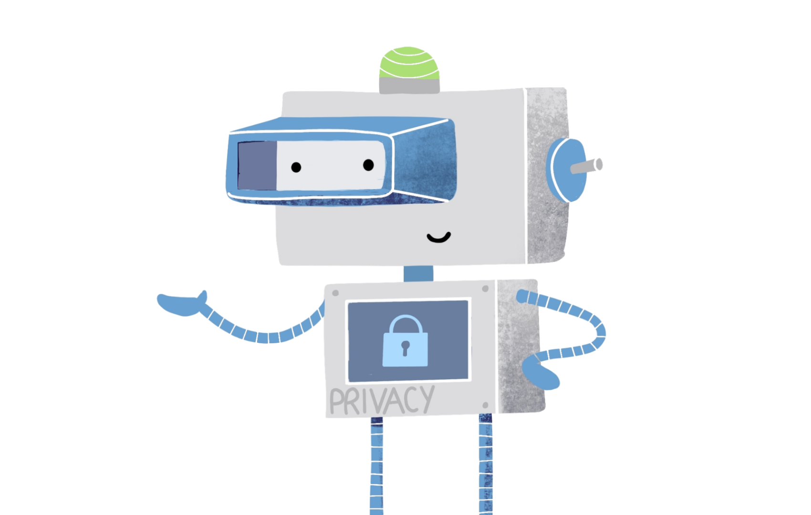

From Spring 2020 to May 2021, our team of four graduate students from the UC Berkeley School of Information developed a product that streamlines the California Consumer Privacy Act’s data-deletion request process and allows users to more easily protect their data. The tool, dubbed “PrivacyBot,” is a production-quality API and accompanying user interface that acts as a router to allow users to remove their personal data from a mass number of data-hoarding companies simultaneously. The project was awarded the Dr. James R. Chen award in 2021 for most outstanding capstone project amongst our graduating cohort.
My role was in leading four main iterations of research and web development, summarized here. Scroll to page 3-4 for an executive summary, page 15 to see the research timeline and methodology, and page 20 for prototype iterations.
Click here to see the final result of the project! It is still usable but no longer supported, so you can still run the tool but you need to setup your own instance of Google Oauth credentials.